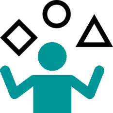
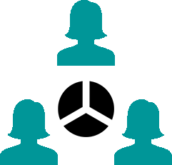

BIENVENUE
Sur la 1ère plateforme collaborative du quartier du quartier de la Cotonne Montferré !
Une plateforme d’entraide à destination du quartier, basé sur le partage, l’échange de biens et de services.
Que vous souhaitiez proposer ou recevoir des biens, services ou compétences,
vous êtes au bon endroit !

DONS
Un livre, un outil, ou quelque chose qui ne vous sert plus chez vous… Offrez vos objets à vos voisins !

COMPÉTENCES
Cuisine, bricolage, couture, dessin… Partagez vos savoirs-faire entre voisins !
PRÊTS
Appareil à raclette, outil, livre, vélo.. partagez vos objets pour qu’ils ne prennent pas la poussière

SERVICES
Transport des enfants à l’école, garde d’animaux, covoiturage, emménagement… Proposez et trouvez des services !